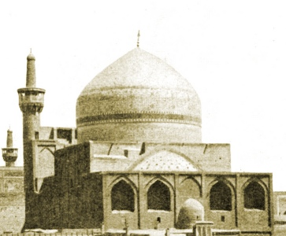

Sacred Texts Islam
|  | The Glory of the Shia WorldThe Tale of a Pilgrimageby P. M. Sykes and Khan Bahadur Ahmad din Khan[1910] |
This is a slightly fictionalized account of life in Persia (Iran) in the 19th century, capped off by a perilous pilgrimage to the Shiite holy city of Meshed (Mashhad), in the foothills of the mountains that run up to the Zoroastrian Olympus, Damavand. The book is a rare collaboration between a turn of the 20th century English and Persian author. The narrative method presages the classic Oscar Lewis ethnographies of poor Mexican families. In both cases, a straightforward account would have been dangerous because of the repressive nature of the society being studied. This is, on one level, an orientalist conceit of an Englishman writing the life story of a (semi-fictional) Persian from the point of view of a Persian. However, Sykes manages to pull off this literary feat convincingly, even for readers at this later date. He also uses the opportunity as a perfect Swiftian setup to gently satire European civilization, which adds an entire ironic layer to the read.
This long-out-of-print (and quite rare) book is a delightful read, particularly for connoisseurs of travelogues. The Shiite, Sufi, Islamic, and Persian lore and legends which are described here will be of great interest to folklorists. The photographs and other illustrations will be of use to graphic designers, anthropologists and historians. This is obviously a primary source on the architecture of the Mashhad pilgrimage site. Largely unknown to outsiders, this complex has some very spectacular (and gorgeous) structures. Most of all, this book is an eye-opener for westerners interested in the deep culture and history of Iran.